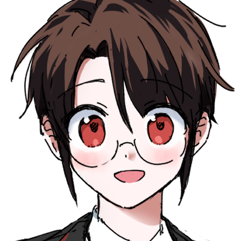
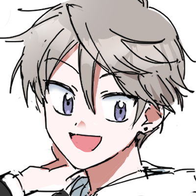
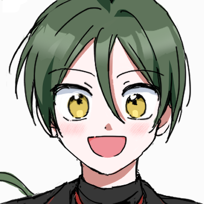
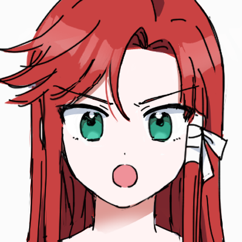

BLOOD
HIGH SCHOOL
Blood High School
Inside me, a power that could destroy the world me.za.me.ru.
But... I just want to live a normal life!
— Ryuo Kuro, right after his black dragon awakening
[Lackness, the dragon of legend.]
[The Dark Dragon of Darkness, said to hold the power to destroy the world.]
[Now, after a thousand years, me.za.me.ru.]
Ordinary model student Ryuo Kuro enrolls at St. Saints Academy, and on his very first day the vampire student council president comes for his blood. In that instant, a power he never knew he had explodes, and Lackness, the legendary black dragon that has slept inside Kuro for a thousand years, awakens.
A vampire's rose garden, a marionette principal gone mad, a monster in an abandoned holy site, a dark mage who keeps students in first year forever. Behind every outlandish incident, week after week, is the black dragon's power, unleashed whether Kuro wants it or not.
The problem is, Kuro doesn't remember any of it.
He hates fighting. All he wants is a normal life. But from the moment the dragon's power woke, the world won't leave Kuro alone. Enemies closing in, the weight of his family name, and moment after moment of choices that break him and make him stand back up. Torn between wanting to run and the people he can't bear to lose, can this boy accept the power within him?
— The story of a boy who carries an immense power begins now!

Ryuo Kuro
A bespectacled model student. Timid and gentle, yet kinder than anyone. Unaware of the black dragon sleeping inside him, he just wants to live a normal life. But fate won't leave him alone.

Eunho
Kuro's childhood friend. Sly and full of mischief, but when Kuro is in danger he moves before anyone else. He has a secret even Kuro doesn't know.

Herbaeken
An exchange student from abroad and a die-hard legend otaku. He drags Kuro and Eunho off on adventures to hunt down every legend in the academy. But what lies behind the cold glint hidden beneath his bright smile—?

Ryuo Shiro
Kuro's twin brother. Pure and childlike, but the other dragon dwelling within him, Lumensia, shouts "Ore-sama is the strongest in the world!!" and turns the whole academy into his playground.

Ryuo Miko
Kuro's cousin and a disciple of his father, Yoshiyuki. A girl whose talent and pride both reach the sky. She clashes with Kuro over who will lead the family, but she has desperate reasons of her own.